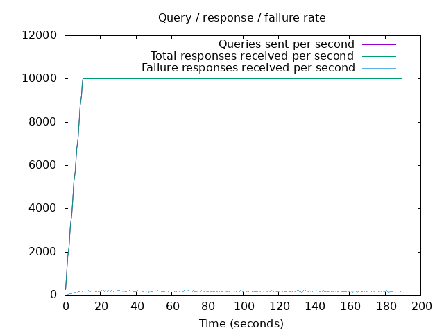
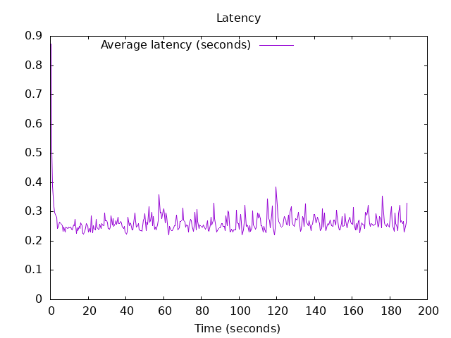

DNS Resolution Performance Testing Tool Version 2.14.0 [Status] Command line: resperf -P 20250619-1155.gnuplot -M doh -s 79.127.218.224 -O doh-uri=https://protective.joindns4.eu/dns-query -d ../domains_shuffled.list -C 500 -m 10000 -b 1400 -q 500000 -R -r 10 -c 180 -t 30 -F 0 [Status] Sending [Status] Ramp-up done, sending constant traffic [Status] Waiting for more responses Warning: received a response with an unexpected id: 659 Warning: nghttp2_session_send failed: The user callback function failed Warning: nghttp2_session_send failed: The user callback function failed Warning: received a response with an unexpected id: 677 Warning: nghttp2_session_send failed: The user callback function failed [Status] Testing complete Statistics: Queries sent: 1849999 Queries completed: 1849995 Queries lost: 4 Response codes: NOERROR 1252469 (67.70%), SERVFAIL 33687 (1.82%), NXDOMAIN 563839 (30.48%) Run time (s): 219.746191 Maximum throughput: 10004.000000 qps Lost at that point: 0.00% Connection attempts: 910 (748 successful, 82.20%) DNS-over-HTTPS statistics: HTTP/2 return codes: 200: 1849997
 